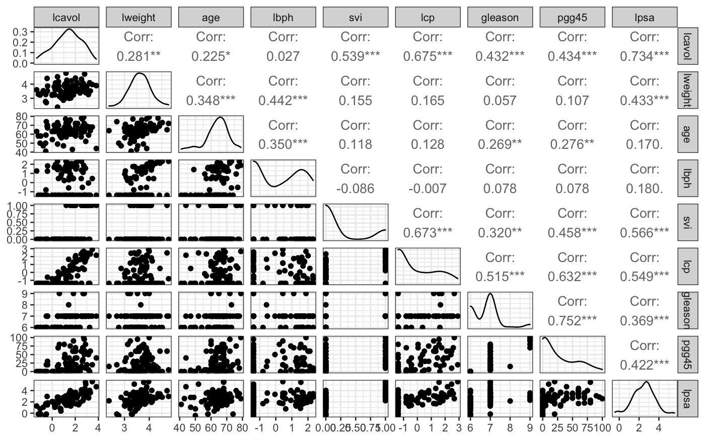
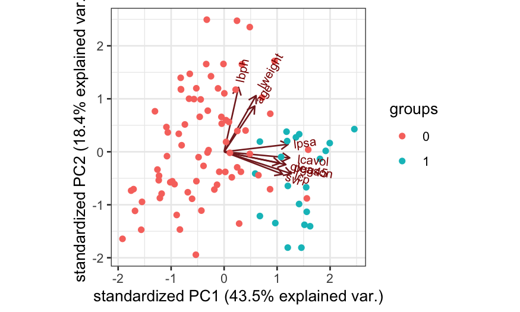
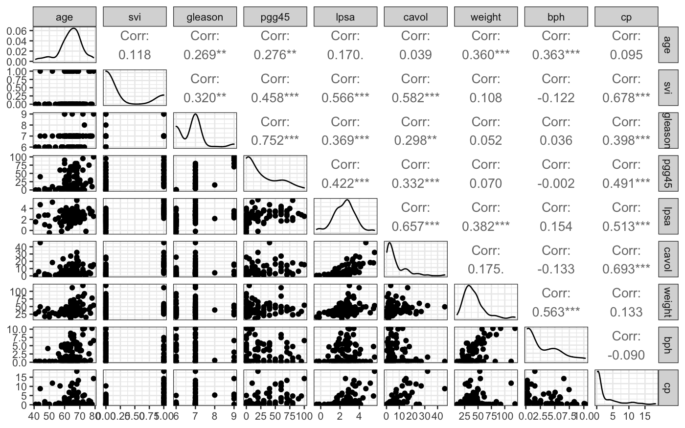
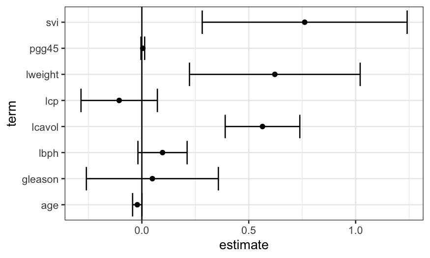

Stat 470/670 Lecture 20: Model-building with a moderate number of variables
Julia Fukuyama
March 30, 2021
Over the next couple of weeks we’ll get back to building models, and we’ll look at models for different kinds of responses (binary, count, categorical).
We won’t have that much more on high-dimensional data, although it will come up in a couple of later lectures.
Today we’ll look at model-building with a moderate number of variables. Today will be linear models, but the ideas carry over to logistic regression and the generalized linear models we’ll talk about later.
Data: Prostate Cancer
We have a data set containing clinical data on patients who were about to receive a radical prostatectomy. The relevant variables are:
lcavol: log cancer volume
lweight: log prostate weight
age: Age in years
lbph: log of the amount of benign prostatic hyperplasia
svi: Seminal vesicle invasion, a measure of how advanced the cancer is.
lcp: log of capsular penetration
gleason: A numeric vector
pgg45: Percent of Gleason score 4 or 5
lpsa: log of the concentration of prostate-stimulating antigen.
We are primarily interested in lpsa, which is used as a marker for prostate cancer. We would like to know whether and how it is related to the other variables we have available to us.
First we look at the data
prostate = read.table("../../datasets/prostate.txt")
summary(prostate)
## lcavol lweight age lbph
## Min. :-1.3471 Min. :2.375 Min. :41.00 Min. :-1.3863
## 1st Qu.: 0.5128 1st Qu.:3.376 1st Qu.:60.00 1st Qu.:-1.3863
## Median : 1.4469 Median :3.623 Median :65.00 Median : 0.3001
## Mean : 1.3500 Mean :3.629 Mean :63.87 Mean : 0.1004
## 3rd Qu.: 2.1270 3rd Qu.:3.876 3rd Qu.:68.00 3rd Qu.: 1.5581
## Max. : 3.8210 Max. :4.780 Max. :79.00 Max. : 2.3263
## svi lcp gleason pgg45
## Min. :0.0000 Min. :-1.3863 Min. :6.000 Min. : 0.00
## 1st Qu.:0.0000 1st Qu.:-1.3863 1st Qu.:6.000 1st Qu.: 0.00
## Median :0.0000 Median :-0.7985 Median :7.000 Median : 15.00
## Mean :0.2165 Mean :-0.1794 Mean :6.753 Mean : 24.38
## 3rd Qu.:0.0000 3rd Qu.: 1.1787 3rd Qu.:7.000 3rd Qu.: 40.00
## Max. :1.0000 Max. : 2.9042 Max. :9.000 Max. :100.00
## lpsa train
## Min. :-0.4308 Mode :logical
## 1st Qu.: 1.7317 FALSE:30
## Median : 2.5915 TRUE :67
## Mean : 2.4784
## 3rd Qu.: 3.0564
## Max. : 5.5829
prostate = prostate %>% select(-"train")
ggpairs(prostate, progress = FALSE)

From the ggpairs plot, we see that the distributions of the variables are reasonable symmetrical, not that skewed, and that there is at least some relationship between most of the variables and lpsa.
We can also use principal components as a visualization of the variables:
prostate_prcomp = prcomp(prostate, scale. = TRUE)
ggbiplot(prostate_prcomp, groups = factor(prostate$svi))

From the principal components plot, we see that there are two groups of variables, one group of which are all highly correlated with lpsa.
And a side note: this data set has already been transformed for you. Many of the variables are logged versions of what were presumably the raw measurements. This is actually a really important step: models with the logged variables perform substantially better than models with the raw variables, as we can see if we un-transform:
prostate_unlogged = prostate %>%
mutate(cavol = exp(lcavol), weight = exp(lweight), bph = exp(lbph), cp = exp(lcp)) %>%
select(-"lcavol", -"lweight", -"lbph", -"lcp")
summary(lm(lpsa ~ ., data = prostate))
##
## Call:
## lm(formula = lpsa ~ ., data = prostate)
##
## Residuals:
## Min 1Q Median 3Q Max
## -1.76644 -0.35510 -0.00328 0.38087 1.55770
##
## Coefficients:
## Estimate Std. Error t value Pr(>|t|)
## (Intercept) 0.181561 1.320568 0.137 0.89096
## lcavol 0.564341 0.087833 6.425 6.55e-09 ***
## lweight 0.622020 0.200897 3.096 0.00263 **
## age -0.021248 0.011084 -1.917 0.05848 .
## lbph 0.096713 0.057913 1.670 0.09848 .
## svi 0.761673 0.241176 3.158 0.00218 **
## lcp -0.106051 0.089868 -1.180 0.24115
## gleason 0.049228 0.155341 0.317 0.75207
## pgg45 0.004458 0.004365 1.021 0.31000
## ---
## Signif. codes: 0 '***' 0.001 '**' 0.01 '*' 0.05 '.' 0.1 ' ' 1
##
## Residual standard error: 0.6995 on 88 degrees of freedom
## Multiple R-squared: 0.6634, Adjusted R-squared: 0.6328
## F-statistic: 21.68 on 8 and 88 DF, p-value: < 2.2e-16
summary(lm(lpsa ~ ., data = prostate_unlogged))
##
## Call:
## lm(formula = lpsa ~ ., data = prostate_unlogged)
##
## Residuals:
## Min 1Q Median 3Q Max
## -1.78876 -0.40705 -0.00634 0.46725 1.82792
##
## Coefficients:
## Estimate Std. Error t value Pr(>|t|)
## (Intercept) 0.759219 1.210444 0.627 0.53214
## age -0.008545 0.012087 -0.707 0.48144
## svi 0.769166 0.270646 2.842 0.00557 **
## gleason 0.130183 0.166701 0.781 0.43694
## pgg45 0.005412 0.004567 1.185 0.23927
## cavol 0.073661 0.014479 5.087 2.03e-06 ***
## weight 0.012511 0.005322 2.351 0.02095 *
## bph 0.056512 0.034547 1.636 0.10546
## cp -0.040047 0.034216 -1.170 0.24499
## ---
## Signif. codes: 0 '***' 0.001 '**' 0.01 '*' 0.05 '.' 0.1 ' ' 1
##
## Residual standard error: 0.764 on 88 degrees of freedom
## Multiple R-squared: 0.5985, Adjusted R-squared: 0.562
## F-statistic: 16.4 on 8 and 88 DF, p-value: 1.329e-14
If we had started off with the raw data, we would have seen that we should log-transform some of the variables by looking at their marginal distributions: the variables that were transformed started off quite skewed, and the transformation got rid of the skewness.
ggpairs(prostate_unlogged, progress = FALSE)

Linear model with all the predictors
As a first step, we can fit a linear model with all the predictors and look at the results. We see that a lot of the coefficients are within the margin of error of zero, which suggests to us that a model with fewer predictors would do better.
prostate_lm = lm(lpsa ~ ., data = prostate)
prostate_coefs = tidy(prostate_lm, conf.int = TRUE)
ggplot(prostate_coefs[-1, ], aes(x = estimate, y = term, xmin = conf.low, xmax = conf.high)) +
geom_point() + geom_errorbarh() + geom_vline(xintercept = 0)

Best subset
There are a lot of ways of doing variable selection for linear models.
You might have heard of forward stepwise or backward stepwise regression, where predictors are added to or subtracted from the model one at a time, stopping when adding a new predictor doesn’t seem to help (for forward stepwise) or when subtracting an existing predictor seems to hurt too much (for backward stepwise).
Part of the reason why people used forward or backward stepwise regression was due to computational cost though, and what they really wanted was to find the set of predictors that gave the best model.
With eight predictors and a laptop, we can actually just look through all the subsets and see which model performs best.
This is what the regsubsets in the package leaps does for you.
library(leaps)
prostate_leaps = regsubsets(lpsa ~ ., data = prostate)
summary(prostate_leaps)$which
## (Intercept) lcavol lweight age lbph svi lcp gleason pgg45
## 1 TRUE TRUE FALSE FALSE FALSE FALSE FALSE FALSE FALSE
## 2 TRUE TRUE TRUE FALSE FALSE FALSE FALSE FALSE FALSE
## 3 TRUE TRUE TRUE FALSE FALSE TRUE FALSE FALSE FALSE
## 4 TRUE TRUE TRUE FALSE TRUE TRUE FALSE FALSE FALSE
## 5 TRUE TRUE TRUE TRUE TRUE TRUE FALSE FALSE FALSE
## 6 TRUE TRUE TRUE TRUE TRUE TRUE FALSE FALSE TRUE
## 7 TRUE TRUE TRUE TRUE TRUE TRUE TRUE FALSE TRUE
## 8 TRUE TRUE TRUE TRUE TRUE TRUE TRUE TRUE TRUE
This shows us that the best one-predictor model uses lcavol, the best two-predictor model uses lcavol and lweight, the best three-predictor model uses lcavol, lweight, and svi, and so on.
We can use this set of models as guidance for what variables to include, and build up an interpretable model using some of the tools we’ve seen earlier in the course.
We start off looking at the best one-predictor model, with lcavol predicting lpsa.
ggplot(prostate, aes(x = lcavol, y = lpsa)) + geom_point() + geom_smooth()
## `geom_smooth()` using method = 'loess' and formula 'y ~ x'

We see that the relationship is pretty close to linear (a line would go through the entire confidence band of the smoother), and so we’re ok with using a linear function of lcavol to predict lpsa.
If there had been a major non-linearity here, we would have wanted to ditch the linear modeling approach and do something non-parametric, maybe loess.
Then we can move to the two-predictor model, and see what the relationship between lcavol, lweight, and lpsa looks like.
We can make a coplot to examine the relationship between lpsa and lcavol, with lweightas the given variable
ggplot(prostate, aes(x = lcavol, y = lpsa)) + geom_point() + geom_smooth(span = 1) +
facet_grid(~cut_number(lweight, n = 3))
## `geom_smooth()` using method = 'loess' and formula 'y ~ x'

Here it seems like there is some non-linearity, but only for the observations with a high value of lweight.
If we had a lot more observations, this might prompt us to move to loess, but since the non-linearity is based on just a few points, we want to see first whether the non-linearity shows up in other graphs as well.
The best three-predictor model identified by leaps included svi in addition to lcavol and lweight, so we next look at those four variables together.
svi is binary and there are only 21 cases where svi is equal to 1, we can’t make a lot of facets and we don’t trust curves that much.
##
## 0 1
## 76 21
prostate$svi = recode(prostate$svi, `1` = "Yes", `0` = "No")
ggplot(prostate, aes(x = lcavol, y = lpsa, group = svi, color = svi)) +
geom_point() +
geom_smooth(method = "lm", se = FALSE) +
facet_wrap(~cut_number(lweight, n = 2))
## `geom_smooth()` using formula 'y ~ x'

The different slopes suggest an interaction, but again, we don’t have that much data.
Next we try looking at the predictors from the four-predictor model. This is pushing the limits of the number of variables we can look at all at once, but we will try.
We can look at the relationship between lpsa, lcavol, and svi, with lweight and lbph as the given variables.
ggplot(prostate, aes(x = lcavol, y = lpsa, group = svi, color = svi)) +
geom_point() +
geom_smooth(method = "lm", se = FALSE) +
facet_grid(cut_number(lweight,
n = 2) ~ cut(lbph, breaks = c(-2, -1, 3)))
## `geom_smooth()` using formula 'y ~ x'

Based on this visualization, we might not be confident about an interaction: the blue lines vary in slope, but there’s based on very small samples. The red lines have different heights but are similar in slope.
In EDA we’re not always required to find a “best” model, and even if we were we can decide on what best means subjectively.
If you wanted to fit a linear model with lcavol, lweight, and svi as predictors plus interactions, you’re free to do so and then call that “best” because of the complexity you can get out of a relatively small number of variables.
On the other hand, if you want a numerical decision for “best”, you can just find the model that optimizes your favorite criterion. For example, if you like Mallow’s Cp, this is available in leaps:
summary(prostate_leaps)$cp
## [1] 27.406210 14.747299 6.173546 6.185065 5.816805 6.466493 7.100428
## [8] 9.000000
When we use Cp, we look for the model with the lowest value of Cp, so here the five-predictor model is “best”.
The idea behind the Cp statistic is that the RSS underestimates the prediction error in a linear model, and the Cp statistic is a corrected version of the RSS.